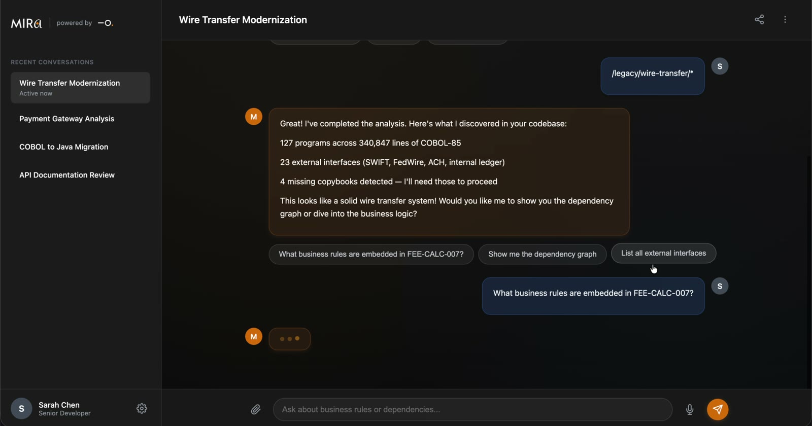

Selected work
Decisions,
Decisions,
not decks.
Six systems, shipped.
Design Systems & AI · Apple
A design system in code
The system lives as code an AI operates. New features start already aligned; when one needs a new pattern, the system captures it after I approve it. Consistency stopped depending on memory.
New pageDays → minutes
Terran · Apple
AI-triaging for Apple Pay
When a build breaks, engineers used to chase one failure across four tools for an hour. Terran does the digging: it surfaces the root cause and its reasoning, and leaves the call to the human.
Time to answer1 hour → 3 minutes

Walmart Data Ventures
One design system, six products
Six products, six teams, 40% design debt. I audited the landscape, anchored a new system on Walmart's own design language, and proved it on one beta product before the rest followed.
Six monthsZero debt, 30% faster

Intuitive Surgical
The reorder signal, in one glance
Surgical teams ordered inventory blind, where availability affects outcomes. I found the decision the data was hiding and made the reorder signal a treemap you read in a single look, not a spreadsheet you dig through.
Navigation3–4 levels → 1 step

Apple · Intelligence Shipping
AI that keeps humans in charge
Internal logistics ran by hand. The temptation was full automation; instead I made every AI action named, explainable, and reversible, so managers stayed in control of the call the machine only recommends.
Throughput50% faster, humans in control

MIRA · Ionate
An AI teammate for legacy code
Modernization teams tried Gen AI and it guessed. I designed MIRA, named it, and wrote its story: one agent over Ionate's engines that reads 40-year-old COBOL, extracts the buried rules, and converts it, in a conversation.
Wire-transfer migration18 months → 72 hours